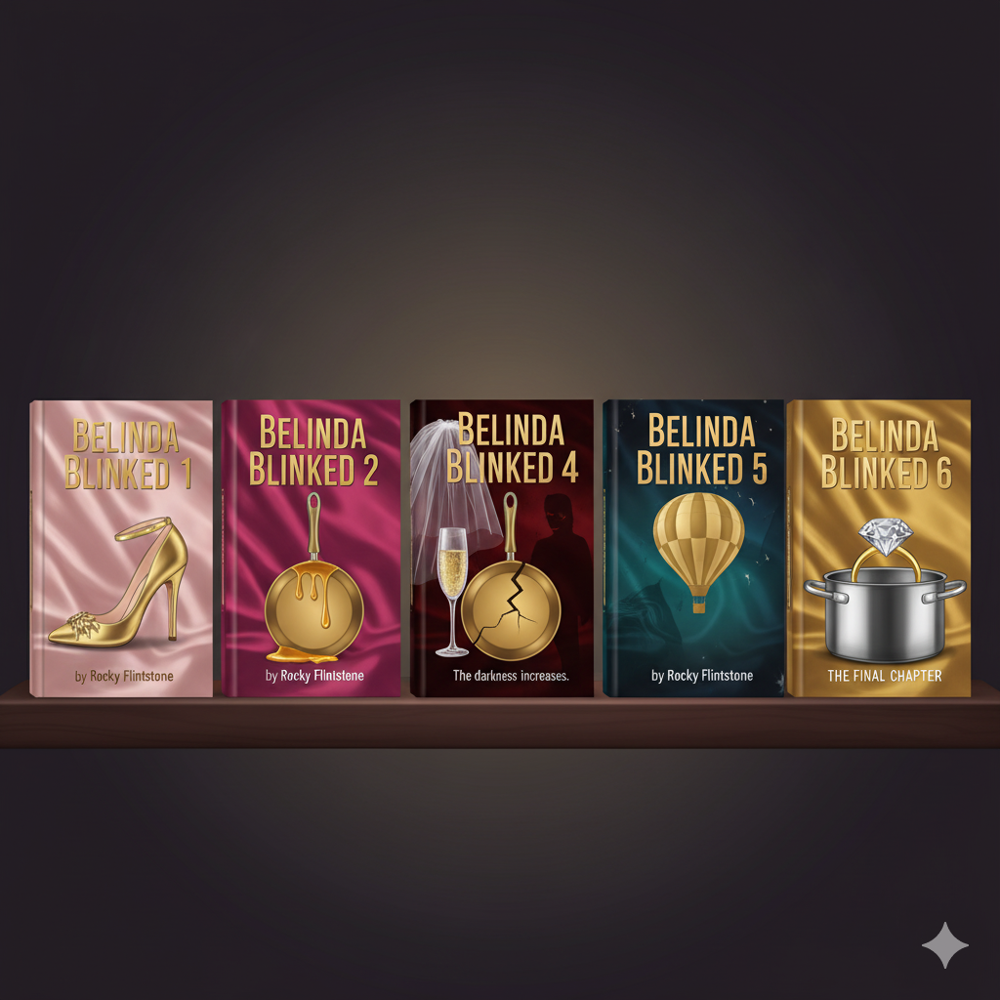
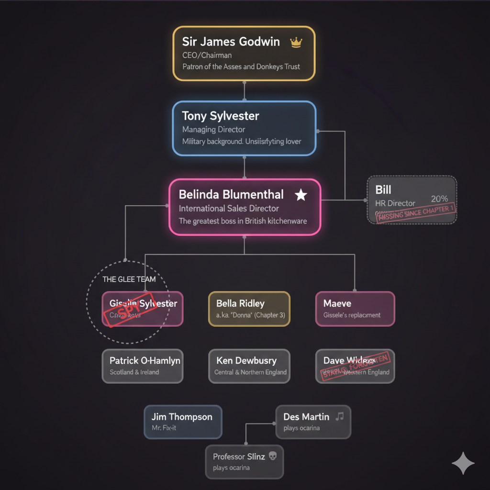
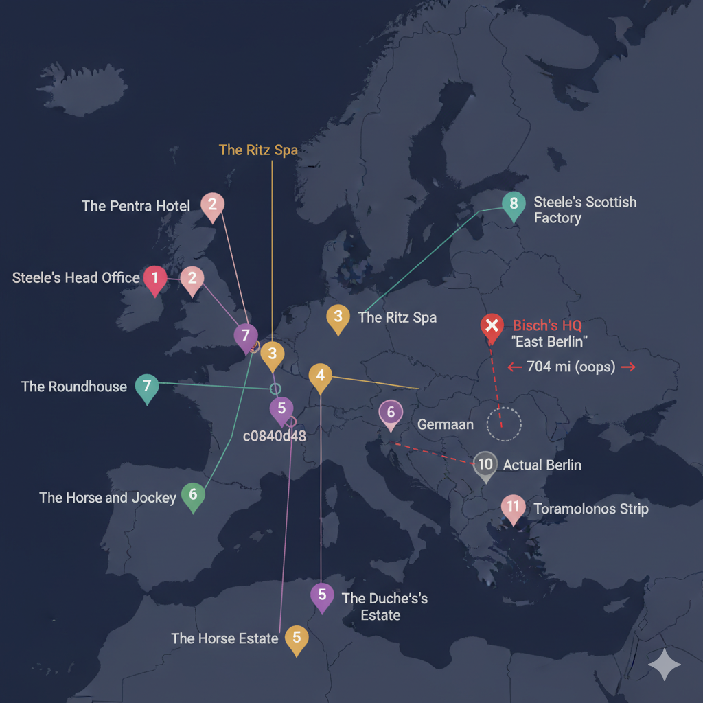

Fan Cannon|Belinda Blinked Universe
Fan Cannon|Belinda Blinked Universe"A modern story of sex, erotica and passion"
My Dad Wrote a Porno is a comedy podcast in which Jamie Morton reads aloud the self-published erotic novels written by his actual father, known by his pen name Rocky Flintstone. Joined by friends James Cooper and Alice Levine (collectively "Team Porno"), Jamie attempts to narrate the adventures of sales executive Belinda Blumenthal while the three of them try not to die laughing. Rocky writes in his garden shed because his wife won't let him write in the house. Before Belinda Blinked, he self-published books on Brazil tourism, mineral identification, and gardening.
The podcast launched on October 4, 2015 after Jamie's dad handed him chapters at a family birthday party. Jamie shared them at a Christmas lunch, and Alice suggested turning it into a podcast. The show ran for 6 series through December 12, 2022, amassing over 430 million downloads worldwide, an HBO special filmed at the Roundhouse in London (May 2019), world tours, an annotated book, and celebrity fans ranging from Elijah Wood to Lin-Manuel Miranda.
Rocky's six-book magnum opus, self-published on Amazon. The first four were written before the podcast started. Book 5 was the first written after Rocky became famous.

Spin-offs: Lockdown 69, Christmas specials, business tips, wine diet book, sweet treats recipe book, Spanish translation.
Over the years, these celebrities appeared on Footnotes episodes or publicly declared their love for the podcast:
Interactive companion pages for the Belinda Blinked universe
Six books, six podcast series, one HBO special, and a lot of pots and pans
Tap a character to learn more (if Rocky remembers they exist)

The things that make Belinda Blinked a true literary masterpiece
From a Christmas lunch to 430 million downloads
Rocky's geography is... creative. Here's where the Belinda Blinked universe actually takes place.

Test your knowledge of the greatest literary universe of our time
50 questions covering characters, plot points, Rocky's quirks, and podcast history. How many can you get right?